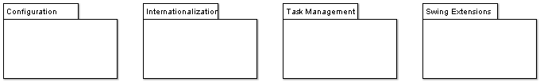

These subsystems of ArgoUML are infrastructure subsystems that just are there for every other subsystem to use - but they are not using any other part of ArgoUML.
Low-level subsystems have a simple dependency structure: All other ArgoUML packages may depend on them, but there are no dependencies "upwards", nor between them.
This latter statement is the way to recognize a low level subsystem: it does not depend on any other argouml package.
All these subsystems are started and initiated (if needed) from the Application subsystem, see <<Subsystem>> Application.
Internationalization - see <<Subsystem>> Internationalization.
?TaskManagement - see <<Subsystem>> TaskManagement.
Configuration - see <<Subsystem>> Configuration.
- Swing extensions.
The Model - See <<Subsystem>> Model.
